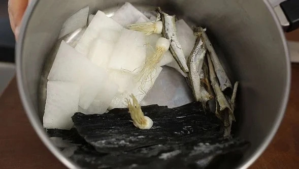
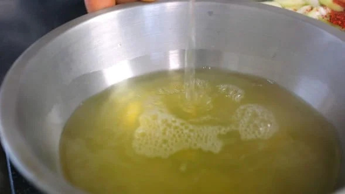
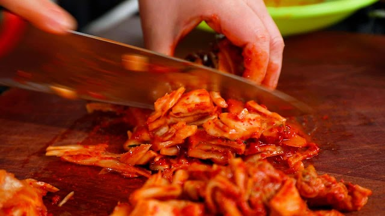
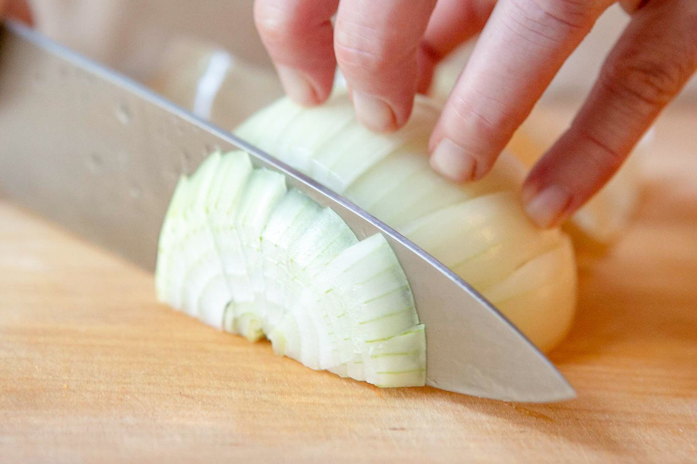
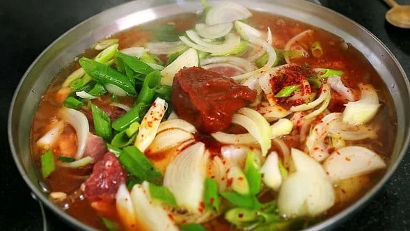
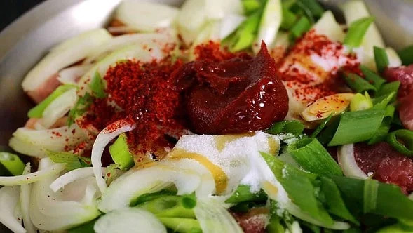
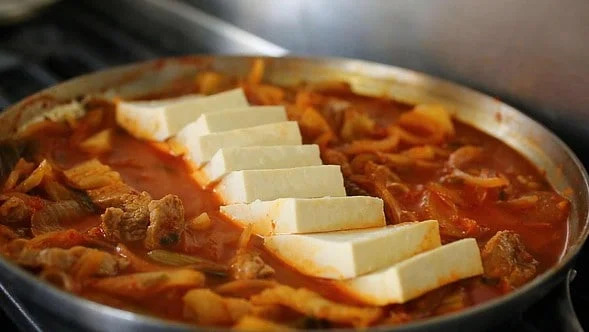

Ingredients
Soup Ingredients
- 1 pound kimchi, cut into bite pieces
- 1/4 cup kimchi brine
- 1/2 pound pork shoulder
- 1/2 package of tofu
- 3 green onions
- 1 medium onion sliced (1 cup)
- 1 teaspoon kosher salt
- 2 teaspoons sugar
- 2 teaspoons gochugaru
- 1 teaspoon gochujang
- 1 teaspoon toasted sesame oil
- 2 cups anchovy stock (or chicken broth)
Stock Ingredients
- 7 large dried anchovies, heads and guts removed
- 1/3 cup Korean radish, sliced thinly
- 4 x 5 inch dried kelp
- 3 green onion roots
- 4 cups water
Apparatus
- Knife
- 1/3 cup Korean radish, sliced thinly
- Bowl/Skewer
- Pot
Directions
Make Anchovy Stock
Tools: pot, strainer
Put anchovies, daikon, green onion roots, and dried kelp in a sauce pan. Add water and boil for 20 minutes over medium high heat. Lower heat to low for another 5 minutes. Strain.


Make Kimchi Stew (Part 1)
Tools: knife, heavy pot
Place kimchi and kimchi brine in a shallow pot. Add pork and onion. Slice 2 green onions diagonally and add them to the pot.


Make Kimchi Stew (Part 2)
Tools: pot, lid
Add salt, sugar, hot pepper flakes, and hot pepper paste. Drizzle sesame oil and add anchovy stock. Cover and cook for 10 minutes over medium high heat.


Add Tofu
Tools: knife, pot, lid
Open and mix seasonings with a spoon. Lay tofu over top. Cover and cook another 10 to 15 minutes over medium heat.

Serve
Tools: bowl, ladle
Chop 1 green onion and put it on top of the stew. Remove from heat and serve right away with rice.
Storage
Keeping Your Kimchi Stew
After you eat your food, keep your stew in a refrigerator. When you wish to eat the stew again, boil the refrigerated stew for about 10-20 minutes, then you should be able to eat the kimchi stew again.